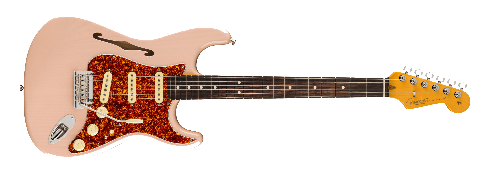

Lenga
Elegimos las guitarras mas exclusivas para entregarte.
Lenga es un e-commerce de guitarras exclusivas en Buenos Aires, inspirado en la madera lenga de la Patagonia, reconocida por su nobleza y resonancia. Nuestro nombre refleja la esencia de lo que ofrecemos: instrumentos únicos, seleccionados por su calidad, diseño y carácter propio. En Lenga creemos que cada guitarra es más que un instrumento, es una extensión del músico y de su identidad. Por eso reunimos modelos especiales y ediciones limitadas, pensados para quienes valoran lo artesanal y lo auténtico. Más que una tienda, somos un espacio donde descubrir guitarras con personalidad y un sonido inconfundible.

Stratocaster vintage 60s
Fender
Stratocaster
Inspirada en la década dorada del rock, esta Stratocaster captura el auténtico espíritu de los 60. Con pastillas de estilo vintage, mástil en C y tonos brillantes, ofrece un sonido versátil ideal para blues, surf y rock clásico. Su estética retro resalta con un acabado elegante y nostálgico.
$899,99
Ver +

Player II Modified Telecaster® SH
Fender
Telecaster
La Player II Modified Telecaster® SH fusiona el diseño clásico Tele con mayor versatilidad. Con pastillas humbucker en el puente y single-coil en el mástil, ofrece desde limpios brillantes hasta sonidos potentes. Su mástil Modern “C”con 22 trastes y puente de seis selletas aseguran comodidad, afinación estable y un rango tonal ideal para diversos estilos.
$1.000,00
Ver +

Limited Edition American Professional II Stratocaster® Thinline
Fender
Stratocaster
La Limited Edition American Professional II Stratocaster® Thinline combina el diseño icónico Strat con cuerpo semi-hueco para mayor resonancia. Sus pastillas V-Mod II ofrecen tonos claros y dinámicos, mientras el mástil Deep “C” y 22 trastes proporcionan comodidad y precisión. Ideal para guitarristas que buscan versatilidad, sustain mejorado y un sonido Strat clásico con carácter moderno.
$2.345,00
Ver +

ES-335 Figured Custom Color - Deep Ocean Burst
Gibson
ES-335
Cuerpo semihueco de arce/álamo/arce veteado AAA de 3 capas con bloque central de arce macizo, mástil de caoba con perfil C redondeado y diapasón de madera de palo de rosa, pastillas calibradas tipo T y acabados de la serie Custom Color.
$4.200,00
Ver +
American Professional II Stratocaster HSS
Fender
Stratocaster
Our popular Deep "C" neck now sports smooth rolled fingerboard edges, a "Super-Natural" satin finish and a newly sculpted neck heel for a supremely comfortable feel and easy access to the upper register. New V-Mod II Stratocaster single-coil pickups are more articulate than ever while retaining bell-like chime and warmth.
$5.700,00
Ver +

Flying V Custom Figured Top - Cobra Burst
Gibson
Flying V
This Gibson Custom Select Flying V™ Custom features a flame maple top and a custom Cobra Burst finish. Guitars from Gibson Custom Select offer unique features that are handpicked by Gibson’s experts. These guitars are based on existing models but have custom finishes.
$10.235,00
Ver +

Les Paul Standard 50s, Exclusive - Transparent Black
Gibson
Les Paul
La Les Paul Standard 50s honra el legado clásico con construcción sólida de caoba, tapa de arce y perfil de mástil grueso. Sus humbuckers Burstbucker recrean los tonos cálidos y potentes de los años cincuenta. Una guitarra robusta, elegante y confiable para quienes buscan autenticidad sonora y estilo icónico.
$3.500,00
Ver +
SG Standard Custom Color - Classic White
Gibson
SG
La SG Standard en Classic White fusiona tradición y distinción. Con doble cutaway para un acceso cómodo, cuerpo liviano y potentes humbuckers, entrega un tono mordaz y lleno de carácter. Su acabado blanco clásico le otorga un aire sofisticado que combina perfectamente con su agresiva personalidad sonora.
$1.350,00
Ver +
Gibson Custom 1958 Les Paul Junior Double Cut, Heavy Aged, TV Yellow
Gibson
Les Paul Junior
Una joya de colección que revive el espíritu de 1958. Su cuerpo de caoba con doble cutaway y acabado Heavy Aged en TV Yellow evoca el paso del tiempo con carácter. Su P-90 ofrece ataque crudo, directo y expresivo, ideal para rock vintage y estilos llenos de actitud.
$9.200,00
Ver +